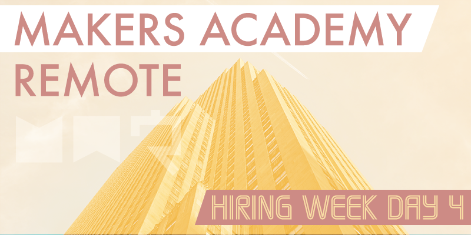

After having our final day with our coach Sam yesterday, today we were supposed to be working with Ruben, Makers Academy's COO and head of careers. However Ruben was out of action for some reason so we were supported by Zara and Spike instead, two of Makers Academy's careers team. While it was a shame not to see Ruben again, it was nice to finally meet some of the other people who work at Makers Academy, and Zara and Spike were great to work with.
Sell yourself
For the morning we split into breakout sessions of two people each to practice talking about ourselves and our life stories, just like we'd be required to in an interview situation. This activity was more useful than I thought it might be, and it was good to practice selling myself to a familiar person, as this didn't come naturally. After this we regrouped to discuss our findings with Zara and the rest of the cohort. Selling myself isn't something I've particularly excelled at in the past, so getting good advice on how to do that was really useful to me.
Life after Makers
In the afternoon Spike gave a presentation about how best to continue studying after the course. We heard that it's recently becoming clear to Makers Academy that some students struggle with further study after the course ends, because they simply don't know how to choose what to learn next. Spike's presentation offered several suggestions for what to study as of next week, and a clear path for how to progress without further direction.
Tech today
Directly after this presentation Spike gave a talk about his observations of the tech scene right now, particularly in London. I found this very useful, it's been a consideration of mine that I might struggle to know which particular tech to focus on after the course, because I don't know what technologies hiring companies are currently looking for, and Spike cleared that confusion up nicely.
Interview questions
The final task of the day was to split into further two person breakout sessions to discuss answers to a provided list of difficult interview questions that we might face. The questions addressed the unfortunate situation that some companies (although not those who already work with Makers Academy, of course) might still have a difficult time believing that graduates from a twelve week bootcamp will be capable enough to be productive. Thankfully many companies are coming around to this new way of thinking, but some of the more old school companies might not be, and it's important to know how to respond to these questions.
All done
The day ended early at 4pm, and with that the course has ended with a fizzle, not a bang. After working very closely with the same group of people for three months it feels very strange that the course has come to an end without any form of celebration, or retrospective, but I guess that might be due to the nature of a remote course. Tomorrow is planned as a self-managed day for the remote students to begin applying for jobs, while the on-site students will attend a careers fair with hiring partners at Makers Academy HQ. Spike did mention that somebody from Makers Academy's staff might jump online at some point for a quick last day catch up with the remote cohort, but that's not the same as a proper farewell with all of us and our coach, which I think would have been a more fitting end after such an intense time spent together. However, because I live quite close to London I'll be attending the careers fair tomorrow, as will a handful of other remote students who are close to London.